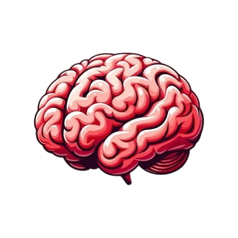

Eat Right For Your Mood
NutriMood AI analyzes your mood and suggests personalized foods to improve your energy, focus, and emotional wellness.
98%
UI Accuracy Goal
25+
Mood Types
200+
Food Suggestions
24/7
Lucky AI Support

Everything Your Mood Needs
Smart mood detection, food recommendations, food scanner, and Lucky AI chatbot in one platform.
Face Mood Detection
Detect mood using facial expression analysis with AI-powered emotion recognition.
Voice Analysis
Analyze voice or text sentiment to understand how the user feels.
Food Recommendation
Suggest mood-based foods like banana, almonds, oats, green tea, and more.
Lucky AI Chatbot
Ask nutrition questions and get friendly AI guidance with source links later.
Food Scanner
Upload food images and preview nutrition details like calories and protein.
Personal Dashboard
Store mood history, recommendations, chat history, and progress after login.
Choose How You Feel
Select a mood or login to use advanced face detection and voice analysis.
Selected Mood
Happy
Recommended For Your Mood
Preview of mood-based food recommendation. Login to save your results.
Detected Mood
Happy
Confidence Preview: 92%Avocado
Healthy fats for energy and focus.
Dark Chocolate
Helps boost mood and feel-good vibes.
Blueberries
Antioxidants for brain health.
Nuts
Supports steady energy.
Chat With Lucky AI
Lucky AI helps users understand mood-based foods, nutrition tips, and wellness suggestions.
- ✅ Mood-based food advice
- ✅ Simple Tanglish explanation
- ✅ Internet search integration later
- ✅ User history after login
Lucky AI
Online • Mood Nutrition Assistant
Upload Food. Get Nutrition Preview.
In full version, user can upload food image and get basic nutrition details.
Sample Nutrition Result
How NutriMood AI Works
Login
Create account to store mood and food history.
Detect Mood
Use face, voice, or self-check mood analysis.
Get Food
Receive personalized mood-based food suggestions.
Ask Lucky AI
Chat and get more nutrition guidance.